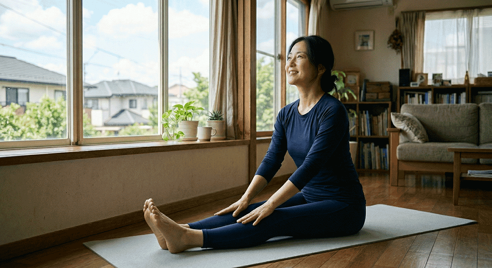
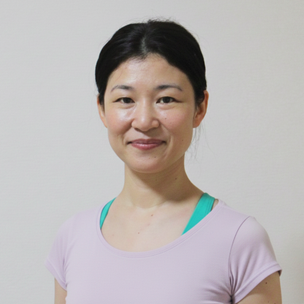
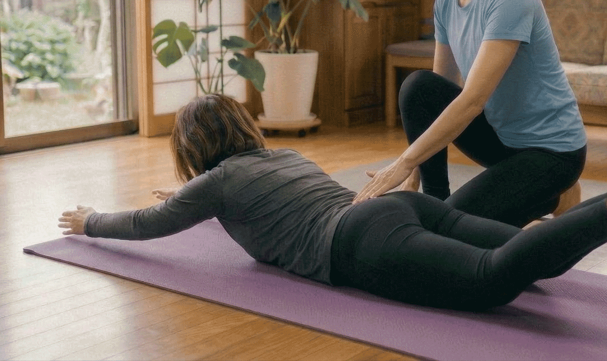
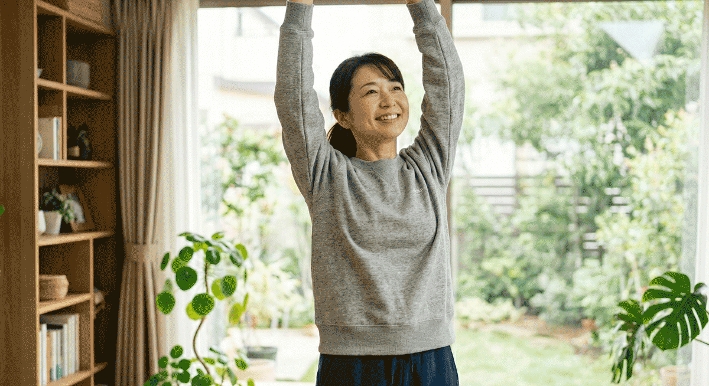

「お金を払って劣等感を感じに行くのは違う」と気づいた40代のあなたへ。
40歳からの、心地よく整う
訪問型プライベート・ピラティス＆ヨガ
お化粧も着替えも不要。ジャージのまま自宅で待つだけで、
「心と体のゆとり」が戻ってくる

【画像1】画像が読み込めませんでした。
URL（top-2.png）が正しいかご確認ください。
「お金を払って劣等感を感じに行くのは違う」と気づいた40代のあなたへ。
お化粧も着替えも不要。ジャージのまま自宅で待つだけで、
「心と体のゆとり」が戻ってくる

【画像1】
【画像2】こんにちは。訪問型プライベート・ピラティス＆ヨガ「Grounded Soar（グラウンデッド・ソア）」主宰の、Nanairoと申します。
40代を迎え、体力の衰えや体型の変化を感じる日々。「健康のために運動を始めなきゃ」と頭ではわかっているのに、いざやろうとすると、どうしても足が重くなってしまうことはありませんか？
もし一つでも当てはまるなら、どうかご自身を責めないでください。それはあなたが運動へのモチベーションがないからではありません。「今のあなたに本当に合う環境」に出会えていないだけなのです。
周りの目を気にして無理に背伸びをし、お金を払ってまで劣等感を感じに行くのは違う。
そう思いませんか？
とはいえ、日々の忙しさに追われて「運動はまた今度でいいや」と後回しにし続けると、体は正直にサインを出してきます。
ふと5年前の自分の写真を見て、その違いに愕然とした経験はありませんか？運動不足を放置することで、体は少しずつ硬くなり、無意識のうちに姿勢は崩れていきます。足がつりやすくなったり、慢性的な痛みが抜けなくなったり。
体のこわばりは、やがて「心のこわばり」へと繋がります。自分の体型に自信が持てなくなり、「どうせ私なんて」という諦めが、日常からふとした心の余裕まで奪っていってしまうのです。
実は、私自身も過去に同じようなモヤモヤを抱えていた一人です。

以前、私は20人ほどが参加するグループレッスンに通っていました。先生の動きを見よう見まねでやってみるものの、「果たして自分のこのやり方で合っているのか？」が全くわかりませんでした。
人数が多すぎて先生に質問するタイミングもなく、ただ周りのペースに合わせて時間をこなすだけ。「きっと、もっと私の体に合った効果的な方法があるはずなのに、それを知ることができない…」そんなもどかしさと、置いてけぼりにされているような孤独感を感じていました。
その時の経験から、私は強く思うようになったのです。
「一人ひとりの体にしっかり向き合い、絶対に置いてけぼりにしない場所を作りたい」と。
そこから「ご自宅への訪問型」という形にたどり着きました。他人の目が一切ない、あなたが一番リラックスできる安全なテリトリーで、心身をほぐしていく。それが私の提供するレッスンの原点です。
私がお届けするのは、決まったマニュアルを押し付ける指導ではありません。事前の丁寧なヒアリングで、今の体の不調や、過去の運動に対する不安までしっかりお伺いします。その上で、その日のコンディションに合わせて「ピラティスの体幹アプローチ」と「ヨガのリラックス要素」を完全オーダーメイドでブレンドします。

実際に、この訪問レッスンを継続されているお客様からは、このような声をいただいています。
「5年前の写真を見てハッとしました。ハードな筋トレは続かないと分かっていたので、ピラティスに出会えて本当によかったです」
「お金を払って劣等感を感じに行くのは違うと思っていました。ここはプライベートなので、からかわれたトラウマがあっても人目が気になりません」
「ポーズが合っていれば『いいね』と褒めてもらい、違っていても具体的な指示で直せるので安心できます。ごまかしのない的確なアドバイスが嬉しいです」
「職場の机に脚をぶつけなくなり、無意識に脚を組まなくなったことに気づきました！お風呂での簡単マッサージも習慣になり、足もつらなくなりました」
「レッスン中、ふと窓の外の空が目に入り、空の綺麗さに気がついて心に余裕ができました。運動が人生で初めて楽しいと感じています」
できないことをダメ出しするのではなく、できたことを認め、正しい方向へ優しく導く。劇的な筋力アップを求めるのではなく、日常の中で「無意識に姿勢が整っている」という成功体験を積み重ねていく。これが、あなたが手にする「心地よく整う健康習慣」です。
もう、「港区女子以外はお断り」のような見えないプレッシャーを感じる必要はありません。準備はお気に入りのジャージを着て、ご自宅でリラックスして待っていただくだけです。
「長く、無理なく続けてほしい」という思いから、明確で通いやすい料金設定にいたしました。
A）レッスン料
B）出張費
C）駐車場代
「本当に私にもできるかな？」「どんな先生が来るか少し不安」
そんな方のために、特別な初回オファーをご用意しました。
料金： 5,000円（税込）
内容： 60分レッスン ＋ カウンセリング
特典： 出張費・駐車場代すべて込み！
※ご自宅まで片道30分を超える場合は、別途差額を頂戴いたします。
まずは一度、ご自宅で無理のない運動による「体がスッキリする感覚」をご体験ください。もちろん、無理な継続の勧誘などは一切いたしません。

【画像5】「健康のために運動しなきゃ」という重いプレッシャーから、まずはご自身を解放してあげてください。誰かと比べて落ち込んだり、無理に頑張ったりする必要はもうどこにもありません。
あなたの体にとって「一番心地よく、効果的なペース」で、日常の不調を手放していく。そして、ふと窓の外の空を見上げて、季節の移ろいを感じられるような「心のゆとり」を取り戻す。
その最初の一歩を、私が全力でサポートいたします。
あなたにお会いし、心と体がふわりと軽くなる瞬間をご一緒できることを、心より楽しみにしています。まずは、下記のフォームから現在のお悩みや、ご希望の日時をお気軽にお聞かせください。
お問い合わせ・初回体験のお申し込みはこちら※ご質問や、ちょっとしたご不安の相談だけでも大歓迎です